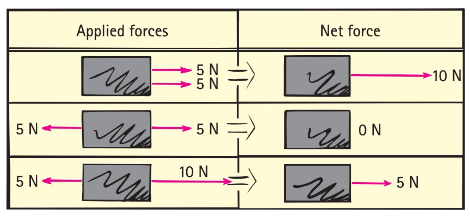
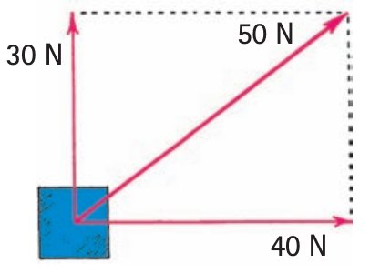

Net Force and Vectors
Section 1.3
A force arrow is a piece of evidence: its length and direction both matter.
Learning Target
Students will represent forces as vectors and determine the direction and relative size of the net force in one-dimensional and simple two-dimensional situations.
- I can explain why force is a vector quantity.
- I can combine forces acting in the same direction or opposite directions.
- I can identify the resultant force from a simple vector diagram and use arrow length and direction to compare force strength and direction.
Vocabulary / Key Notation Preview
vector · magnitude · direction · resultant · net force
Sort the vocabulary. Write each vocabulary word in the column that best matches what you know right now. You may move a word later.
| Know for sure | Recognize | Don't know yet |
|---|---|---|
What's to Come
Circle anything familiar, underline symbols, labels, conditions, data, or features that seem important, and write short notes about what you think may matter later.
The diagram shows two perpendicular force vectors and the diagonal resultant. Imagine the horizontal component is 3 N to the right and the vertical component is 4 N upward. Use the shared vector model for all parts.
(a) Identify which arrow represents the resultant and describe its direction.
(b) Determine the magnitude of the resultant.
(c) Use your answer from part (b) to compare the resultant’s magnitude with each component.
(d) Explain what arrow length and arrow direction communicate in a force-vector model.

Let's Get Started
Skim before close reading. Look at the headings and figures. Find 1–2 things you notice and 1–2 things you wonder about.
| What I noticed | |
|---|---|
| What I wonder |
Annotate the words and visuals together. Underline evidence, circle or highlight bold vocabulary, label arrows, measurements, or important features, connect sentences to figures, and jot short questions or connections in the margins.
I can explain why force is a vector quantity.
Force arrows carry two kinds of information
Force is a vector quantity because a complete description requires both magnitude and direction. In a scaled force diagram, the arrow points in the force direction and its length represents the force magnitude. A longer arrow represents a stronger force when the same scale is used.
This is why a statement such as “the force is 5 N” can be incomplete. If direction matters in the situation, the direction is part of the physical quantity. A vector diagram is not decoration; it is a compact representation of measurable information.

Example 1: Read Force Vectors
In the supplied vector model, explain what changing an arrow’s length would mean physically and what rotating the arrow would mean.
You Try It 1: Read Force Vectors
The diagram shows equal perpendicular vectors. Explain what the equal arrow lengths mean and what the different arrow directions communicate.

I can combine forces acting in the same direction or opposite directions.
Combine forces with direction intact
When forces act along one line, same-direction forces reinforce one another and opposite-direction forces oppose one another. Equal opposite forces cancel. Unequal opposite forces produce a resultant in the direction of the larger force. The arithmetic only makes sense after a direction convention has been chosen.
Perpendicular vectors require geometric addition rather than simple signed subtraction. Place the component vectors as adjacent sides of a rectangle or parallelogram; the diagonal represents their combined effect.
\(R=\sqrt{X^2+Y^2}\)
Physical meaning: Perpendicular components combine geometrically; one-dimensional forces combine using signed components after a positive direction is chosen.
Example 2: One-Dimensional Resultants
The diagram shows the idea of a resultant. For a cart with 9 N right and 4 N left, determine the one-dimensional resultant force and its direction.
You Try It 2: One-Dimensional Resultants
The diagram illustrates that component vectors combine to make a resultant. In a separate one-dimensional case, a 12 N force acts right and a 5 N force acts left. What is the resultant?
- 17 N right
- 7 N right
- 7 N left
- 0 N
I can identify the resultant force from a simple vector diagram and use arrow length and direction to compare force strength and direction.
The resultant is the combined force
The net force is the resultant vector that represents the combined effect of all the component forces. A 3-N horizontal component and a 4-N vertical component produce a 5-N resultant. Its diagonal direction is different from either component, so both the magnitude and the direction must be read from the model.
The same idea applies to angled support forces. Two rope tensions can have horizontal components that oppose while their upward components combine. In equilibrium, the combined support resultant can balance a downward weight vector.


- What does magnitude mean when you read a vector arrow?
- In the hanging-person model, how do the directions of the two support vectors help explain the vertical resultant?
- Why can two equal-length force arrows still have a nonzero resultant?
Example 3: Opposing Force Vectors
Use the opposing-force vector diagram. Explain how arrow direction and relative length determine the resultant: when is it zero, and when does it point left or right?

You Try It 3: Opposing Force Vectors
In the hanging-person vector construction, explain how the two angled support tensions combine to balance the downward weight vector.
Example 4: Read the Resultant
Use the hanging-person vector construction. Compare the two support-tension arrows. Which tension is larger, and what feature of the vector diagram shows that?
You Try It 4: Read the Resultant
In the supplied component diagram, which arrow is the resultant and how does its length relate to the combined effect?
- The diagonal arrow is the resultant; it points in the combined direction and its length represents the magnitude of the combined force.
- The resultant is always the longest individual arrow regardless of direction.
- Opposite force arrows must always be added as positive magnitudes.
- A resultant has magnitude but no direction.
Vocabulary with Definitions / Reference
| Term | Physics meaning |
|---|---|
| vector | A quantity represented by both magnitude and direction. |
| magnitude | The size or strength of a quantity. |
| direction | The orientation in which a vector points. |
| resultant | The single vector equal to the combined effect of two or more vectors. |
| net force | The resultant vector formed by adding all forces acting on an object. |
Summary
- Force is a vector: both magnitude and direction matter.
- Same-direction forces add, opposite-direction forces subtract, and the resultant points in the combined direction.
- Arrow length and direction are evidence in a vector model, not decoration.
What I Figured Out
1. What makes force a vector?
2. How do you combine opposite one-dimensional forces?
3. What do arrow length and direction tell you about a resultant?
Common Mistakes
- Adding force magnitudes while ignoring direction.
- Treating arrow length as decoration instead of evidence about magnitude.
- Pointing the resultant opposite the direction of the larger unbalanced effect.